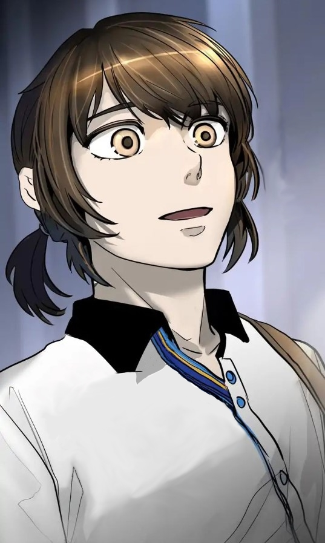
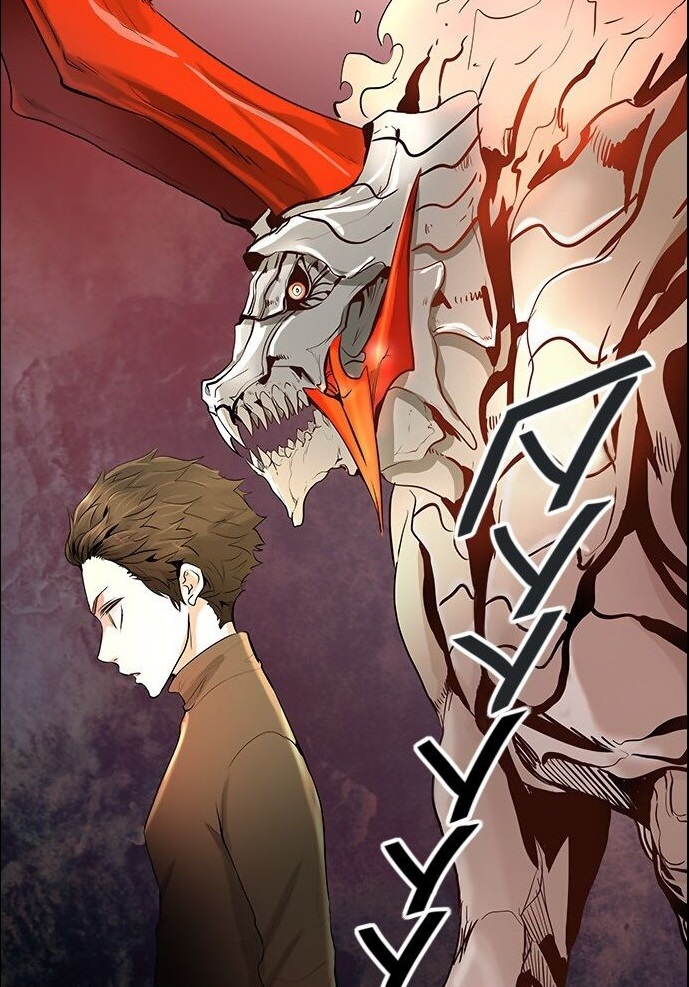
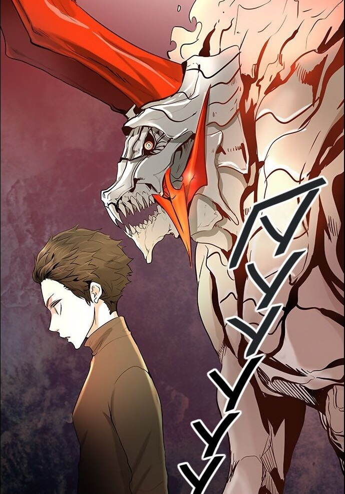
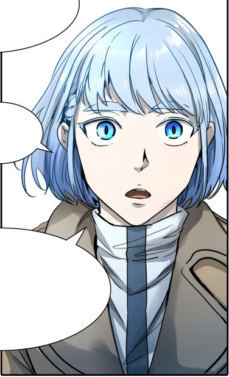
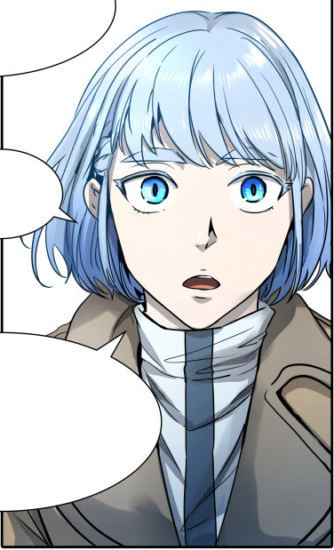

Полное имя -Двадцать Пятый Баам. Протагонист манхвы, молодой парень с короткими каштановыми волосами и золотистыми глазами. Являющийся Незаконным, вошедшим в Башню вслед за своей подругой, Рахиль, на тот момент ничего не знал о мире Башни и его обитателях. После вербовки в FUG получает псевдоним Джу Виоле Грейс (вероятно в честь отца которого возможно звали Виоле. Грейс Мирцеа Ласлека, основатель FUG, был прислужником V(Виоле) ). Среди избранных своего уровня занимает А-ранг. В данный момент находится на 52 этаже.

 

 
